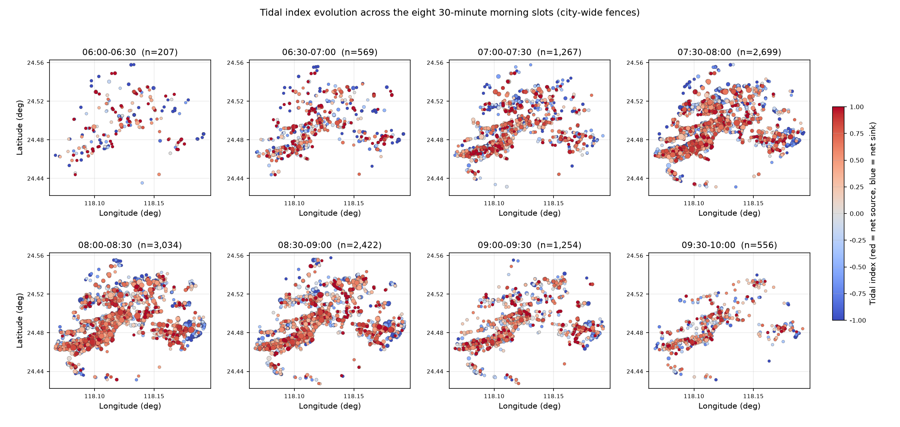
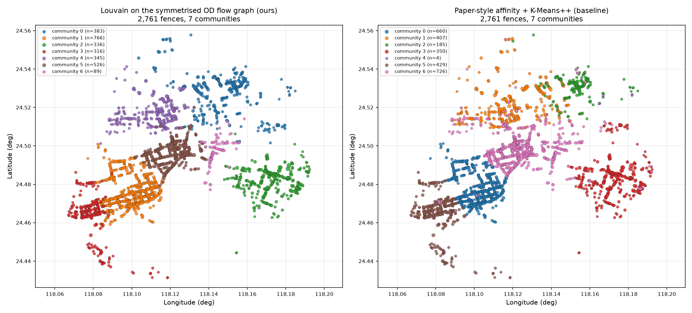
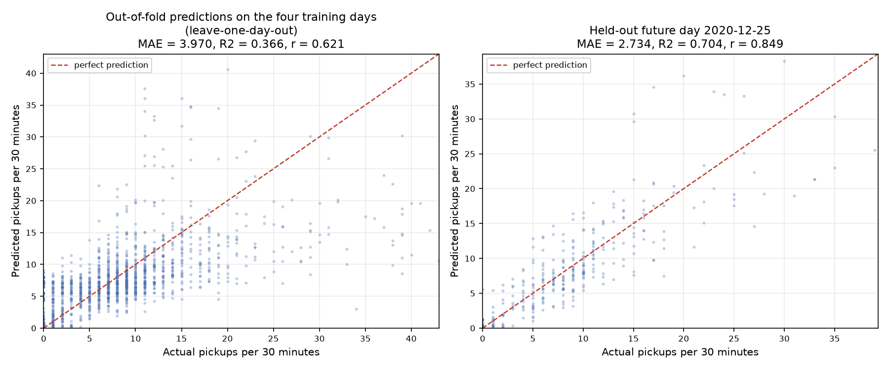
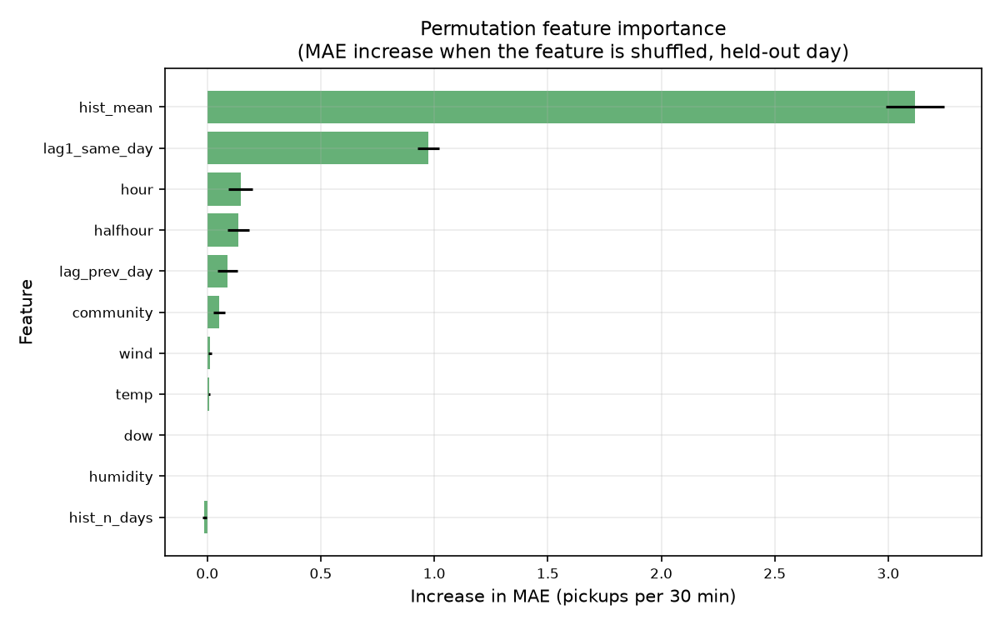

Xiamen shared-bicycle tidal imbalance
Five mornings of order, fence, trajectory and weather records from Xiamen's bike-share system. The project reconstructs the trips, measures how the city's bicycles drain out of some fences and pile up at others, and tests the one number that rebalancing models usually take on faith.
The question
Four questions, one dataset
| # | Question | Why it matters |
|---|---|---|
| RQ1 | How is net inflow/outflow distributed across fences, how strongly is it spatially clustered, and how does it evolve across eight 30-minute slots? | Rebalancing only works where the imbalance is stable and local. |
| RQ2 | What is the measured detour factor ω (path ÷ straight line), and is it constant across zones and hours? | Cost models need ω; the published model imports 1.529 from Ballou (2002) and never measures it. |
| RQ3 | Does a community structure built on OD flow direction beat the published distance + demand-correlation affinity clustering? | A rebalancing zone should be internally balanced; affinity does not target that. |
| RQ4 | How well can fence-level 30-minute demand be predicted under an honest, date-grouped validation scheme? | Short-horizon forecasts are what a dispatcher would actually use. |
The data
What was actually in the archive
Shared bicycle data, Zenodo DOI 10.5281/zenodo.17415891, CC BY-NC 4.0. Five consecutive weekdays, 2020-12-21 to 2020-12-25, morning peak only, WGS-84, UTC+8. The archive itself is not redistributed: it is linked and hash-verified instead.
| Table | Rows used | Quirk that had to be handled |
|---|---|---|
| Order events | 441,350 | BICYCLE_ID written only on the first row of each bicycle block (a merged cell in the original spreadsheet) — forward-filled before pairing |
| Electronic fences | 10,522 rows / 10,517 unique ids | The published paper says 14,071 in its abstract and 10,522 in its Methods |
| GPS fixes | 2,849,243 | No trip identifier, and each bicycle's day is only partly covered |
| Weather (hourly) | 144 | PRCP and visibility columns are entirely empty |
| All “.csv” files | — | Every one is actually an Office Open XML workbook; pd.read_csv fails, the loader sniffs the magic bytes |
The method
Eleven modules, one entry point
Everything is implemented from scratch in a 2,715-line core module — no geopandas, no shapely,
no statsmodels. Point-in-polygon uses matplotlib.path.Path with a bounding-box
prefilter; the heteroskedasticity-robust OLS is written and tested in-house.
| Stage | What it does |
|---|---|
| M0–M1 | Find and extract the archive, classify tables by column-name heuristics, cross-check against the archive's own data dictionary, write the quality report |
| M2 | Pair LOCK_STATUS 0→1 per bicycle in time order; keep durations in [60, 3600] s → 212,680 trips |
| M3 | Assign endpoints to fences: containment + a 50 m centroid snap, with a radius-sensitivity table |
| M4 | Join hourly weather as a control variable only; not causal |
| M5 | Fence × 30-minute panel with tidal index, keeping cells with ≥ 10 movements |
| M6 | Recompute four published statistics — a pipeline validation, not our finding |
| M7 | City-wide tidal map, slot evolution, Moran's I with 999 permutations |
| M8 | Measured ω: tracking episodes → path ÷ chord, bootstrap 1000×, Kruskal–Wallis, Welch ANOVA, HC1-robust OLS |
| M9 | OD graph → Louvain, benchmarked against a reproduced paper-style affinity + K-Means++ baseline |
| M10 | HistGradientBoostingRegressor with leave-one-day-out grouped cross-validation — never a random K-fold, which would leak the future |
| M11 | Interactive Folium map and a Plotly–Dash dashboard |
Results
What came out

| Grouping | Group | n | Mean ω |
|---|---|---|---|
| Fence role | source (residential) | 8,711 | 1.559 |
| Fence role | balanced | 5,306 | 1.494 |
| Fence role | sink (commercial) | 4,415 | 1.478 |
| Hour | 06:00 | 2,435 | 1.589 |
| Hour | 08:00 | 13,274 | 1.481 |
Kruskal–Wallis by fence role: p = 1.5 × 10−12. By hour: p = 4.1 × 10−4. The zone contrast survives an HC1-robust OLS that also controls for hour, so “ω is not a constant” is not an artefact of composition.





hist_mean +3.12 MAE, lag1_same_day +0.97, time-of-day ≈ +0.14,
community +0.05. The weather controls contribute almost nothing — expected with five days
and a single rainy day.
Limitations
What this project cannot say
- The four reproduction statistics are not our findings. 212,630 trips, cross-day r > 0.90, the 08:00–09:00 peak and the ≈ 60 % rainy-day drop belong to the published study; they are reproduced only to prove this pipeline parses and pairs correctly. All four pass.
- Observational and narrow. One city, five mornings, morning peak only, no rider identifiers, no counterfactual. Everything is an association.
- The panel is sparse. The prescribed ≥ 10 movements rule retains 1,738 fence–slot cells over 405 fences, so the prediction model is estimated on a small but honest sample (fold MAE 4.09 ± 1.33).
- ω is measured on tracking episodes, not confirmed trips. The independent cross-check inside OD trip windows (n = 2,456, mean 1.377) bounds but does not remove that bias.
- The 50 m snap is a choice. Endpoint match rate moves from 1.90 % (containment only) to 88.72 % (200 m); the sensitivity table is in the repository rather than buried.
- Communities are descriptive flow groupings, not administrative districts; their boundaries shift with the resolution parameter and the flow floor.
Reproduce
Running it
The committed artifacts make the notebook runnable in about ten seconds without downloading anything; the full pipeline needs the archive and runs in about a minute with a warm parse cache.
# read the analysis without the raw data (artifacts are committed)
pip install -r requirements.txt
jupyter lab Xiamen_SharedBicycle_Analysis.ipynb
# or regenerate every artifact from the archive
python run_pipeline.py
python run_pipeline.py --skip-to M8 # resume from a stage
# interactive dashboard on http://127.0.0.1:8050
python dash_app.py
Expected numbers are listed in docs/EXPECTED_OUTPUTS.md so a correct run can be
verified rather than eyeballed.